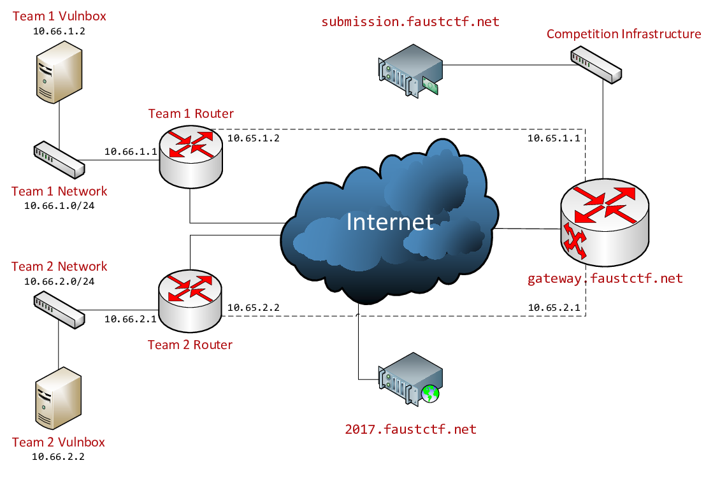

class: center, middle, inverse ### Intro to # Attack/Defense CTFs A young Hacker's illustrated primer --- name: ctf # Capture The Flag ## Jeopardy + tasks need to be solved for flags/points + categories like Web, Forensic, Crypto, Stego, ... + teams compete for more points = higher rank on scoreboard + duration: 24-72h --- template: ctf ## Attack/Defense + teams play against each other + *every* team gets a server with (the same) vulnerable services (Vulnbox) + all teams are connected via game network (VPN) + goal 1: pwn foreign services => **attack points** + goal 2: secure own services => **defense points** + goal 3: keep own services up/functional => **SLA points** + duration: 8/9h usually --- name: ctf # Attack/Defense CTF ### Flag: text string ``` Regex: FAUST_[A-Za-z0-9/\+]{32} e.g. FAUST_WShfxBYH7MadRQAAAACqQSJyXseHHZvj ``` --- template: ctf name: ctf ### What's a service? Some program with vulnerabilities, specifically written for the contest. + Python, C, C++, C#, Java, sometimes exotic stuff (hello, COBOL) + stores and allows to retrieve flags in some way + usually accessible via web interface or just TCP socket --- name: ctf # Attack/Defense CTF ### Gameserver + provided by the organizers + periodically stores flags in every service on every Vulnbox + later retrieves flags => checks if each service is working correctly + allows teams to submit stolen flags for points + runs the scoring, provides a scoreboard --- template: ctf name: ctf ### Rules Depend on the CTF organizers, but usually: + no attacks against game infrastructure + no denial-of-service attacks against networks or machines + (no attacks against other player's machines) + (connections may not be filtered, i.e. actual bugs should be fixed) + (be fair, be friendly, etc.) --- # Attack/Defense CTF ### Game phases 1. before start: every team downloads encrypted VM image 1. start: organizers provide decryption password<br> => explore services, processes, configuration (reconnaissance)<br> => secure machine, add SSH keys, ... 1. 1h later: network between teams and gameserver goes up<br> => attacks incoming 1. 8hrs later: game ends 1. party .center[<img src="https://blog.emojipedia.org/content/images/2017/11/google-beer-emoji-before-after-emojipedia.jpg" width="60%">] --- ## Faust CTF 2017  [Rules](https://2017.faustctf.net/information/rules/) [Network Setup](https://2017.faustctf.net/information/setup/) [Scoreboard](https://2017.faustctf.net/competition/scoreboard/) --- name: useful # Shall we play a game? + step 1: plug in, mount share, don't panic --- template: useful name: useful + choose a service + find other people working on that (dashboard) + see what it does (poke it with a stick) + read source *(if available)*, reverse engineer + look at stored data & network traffic --- template: useful name: useful + identify exploitable issues (SQLi, command injection, etc.) + **Attack** + test exploit manually: submit flag in dashboard + if it works: yay, time for automation! + write an exploit script (we have *templates*) + submit in dashboard + watch stats for success! + **Defend** + patch own service (make a backup) + see if the service stays functional + eat pizza, make a meme, repeat --- # Our infrastructure: w0y.at ## GitLab https://gitlab.w0y.at + one git repo per contest + check in service files, exploit scripts, etc. ## Mattermost https://mattermost.w0y.at + one team per contest, one channel per service + **Town Square:** important messages for all players + **Off-Topic:** totally spam + **MOC:** meme operation center (the funny spam) --- # Our infrastructure: W0PR <img src="https://media2.giphy.com/media/flepRwnvrG17a/giphy.gif" width="80%"> *We_0wn_Y0u Operation Plan Response attack defense CTF framework 2* Dashboard: http://localhost:5000 --- # W0PR components **Web Dashboard**<br> overview, alerts, stats, everything **Exploit Execut0r**<br> periodically runs exploit scripts against other teams' Vulnboxes **Flagbot**<br> submits gathered flags to Gameserver **Scoreboard scraper**<br> scrapes organizers' scoreboard, writes points into our DB **Traffic monitoring**<br> dump vulnbox traffic in 5-min intervals onto share ***netana***<br> scary intelligent network dump analyzer *** Ideas, bug reports, pull requests are welcome!<br> https://gitlab.w0y.at/h4ck/wopr/issues --- name: hostnames # Our network setup: hostnames * service.i [s.i] - service VM * dashboard.i - web dashboard * netana.i - net analyzer --- name: hostnames template: hostnames ### Our Vulnbox - the crown jewel: **vuln.i** [**v.i**] ```sh ssh ctf@v.i ssh root@v.i # be careful ``` --- template: hostnames ### Enemy Vulnboxes: **team**ID**.attack** ```sh nc team37.attack 8080 ``` Be careful what you reveal, other teams will monitor their traffic too! FAUST CTF: use **NOP team** (ID: 1) for testing. --- # Preparing is caring ### Stages of enlightenment + get a GitLab/Mattermost account + add your SSH key in GitLab (**important**) + setup your pwning environment (pwntools, Wireshark, ...) + check out exploit script templates + ... <img src="http://iruntheinternet.com/lulzdump/images/gifs/hackers-mirror-floppy-disk-draw-YOSPOS-1388791509i.gif" style="float: right"> ### Bring with you + Notebook, monitor, *[device]* + Ethernet cable + Power strip + (Gigabit switch) + ... --- class: center, middle, inverse # FAUST CTF 2018 https://ctftime.org/event/554 Fri, 01 June 2018, 14:00<br> SBA Research (Favoritenstraße 16, 1040 Wien) <img src="https://media.giphy.com/media/AszSboFOLrnPO/giphy.gif" width="80%">